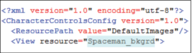
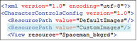

您可以将 HumanIK 自定义绑定角色定义背景的背景图像切换为自定义图像。
更改 HumanIK 自定义绑定角色定义全身视图的背景图像
- 将自定义图像复制到 CharacterControls 目录中的 DefaultImages 文件夹。
- 编辑 <View resource> 元素以指向新图像。在以下示例中，图像被命名为 Spaceman_bkgrd。

您还可以在
CharacterControls 目录中创建一个新文件夹（例如
CustomImages）来保存所有自定义图像。如果创建新文件夹，则必须在配置文件中添加
<ResourcePath> 元素，以告知 Maya 要在该文件夹中搜索图像。

提示： 请勿在配置文件中包含背景图像的文件扩展名。
- 重新加载该布局时，可以通过拖动 HumanIK 窗口的边缘来调整选项卡的大小，以反映自定义图像的分辨率。
注： 背景图像的宽度定义了在调整窗口大小时，自定义布局可达到的最大宽度。最小宽度固定为 250 像素，无法更改。